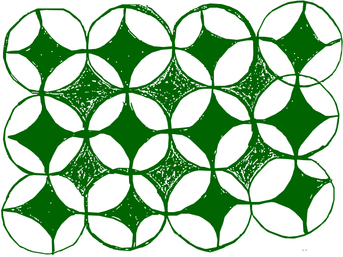

"O espaço geográfico é o encontro de objetos e ações."
— Milton Santos
 Ficha Técnica e Metadados
Ficha Técnica e Metadados
Projeto: Mulheres Que Tecem a Floresta (MQTF) Instituição: Consórcio UnB / UFRR / UFAC Referência: WTF-DIAG-003_Rel_CNI_AGENDA_BIOECONOMIA.md Status: Status Em Revisão Autor: Consórcio UnB / UFRR / UFAC Data: 29 de March de 2026
 BIOECONOMIA: UMA AGENDA PARA O BRASIL (CNI)
BIOECONOMIA: UMA AGENDA PARA O BRASIL (CNI)
A bioeconomia emerge como um paradigma de desenvolvimento sustentável impulsionado por inovações em ciências biológicas e sua aplicação em saúde humana, agricultura, pecuária e biotecnologia industrial. Este avanço é catalisado pelo crescimento populacional, envelhecimento global, e demandas por alimentos, saúde, energia e água potável, em um contexto de mudanças climáticas. O cenário impõe a necessidade de políticas assertivas para o uso sustentável de recursos naturais e tecnologias. Este documento, resultado de um debate multissetorial e pesquisa de campo, estabelece uma agenda estratégica para o Brasil neste domínio.
 1. A Bioeconomia Emergente
1. A Bioeconomia Emergente
As últimas décadas foram marcadas pela digitalização, duplicando a capacidade computacional em ciclos de dezoito meses. A bioeconomia representa a próxima revolução, alicerçada na capacidade de ler, copiar e, crucialmente, programar o código da vida. A velocidade de avanço das ciências da vida é comparável à da tecnologia digital, com colapso de custos e aumento exponencial da capacidade de produção biológica.
Esta transformação transcende setores, impactando da agricultura à medicina, e da energia à química. Países que adotam proativamente tecnologias baseadas em ciências da vida, como culturas geneticamente modificadas para maior produtividade ou resistência a estresses, obtêm rápida vantagem competitiva, erodindo margens de commodities tradicionais. O Brasil, detentor de vasta biodiversidade e forte setor primário, enfrenta o imperativo estratégico de integrar esta revolução. A inação ou a manutenção de políticas burocráticas e conservadoras resultará na perda de talentos e na obsolescência de setores-chave. A capacidade de programar algas para produzir combustível ou bactérias para vacinas ilustra o potencial disruptivo e a necessidade de o país criar um ambiente que atraia e retenha capital humano e de investimento.
2. Bioeconomia em Tempos da Terceira Revolução Industrial
A bioeconomia, fundamentada no conhecimento avançado de genes, processos celulares e uso de biomassa renovável, demanda planejamento estratégico e um marco regulatório inovador. As bases para sua criação e o desenvolvimento para as biociências devem garantir governança, cooperação internacional e competitividade.
A convergência entre biologia, física e engenharia, e a capacidade de desvendar e reprogramar o código genético, estão remodelando a base da criação de riqueza. A diversidade gênica natural, combinada com técnicas de biologia molecular, oferece uma fonte quase inesgotável para a engenharia de novos produtos biológicos.
A necessidade de uma Política Nacional de Bioeconomia decorre de quatro fatores essenciais:
- Multidimensionalidade: Implicações sociais e econômicas da biologia sintética, exigindo políticas integradas e a convergência de diversas ciências.
 Oportunidades: Expansão de mercados e soluções para desafios globais em alimentos, saúde, energia e meio ambiente.
Oportunidades: Expansão de mercados e soluções para desafios globais em alimentos, saúde, energia e meio ambiente.- Escolhas Complexas: Equilíbrio entre a minimização de riscos de novos produtos à saúde e ao meio ambiente, e a promoção da atividade econômica. A rigidez regulatória atual impede o avanço.
- Fragilidade Institucional: Desconexão entre academia e setor empresarial, e barreiras burocráticas para pesquisa e inovação.
As aplicações da bioeconomia abrangem:
- Produção Primária: Cruzamento e melhoramento de plantas e animais, aplicações veterinárias, produção de biocombustíveis.
- Saúde Humana: Terapêutica, diagnóstica, farmacogenética, alimentos funcionais, equipamentos médicos.
- Processos e Produção: Químicos, plásticos, enzimas.
- Aplicações Ambientais: Biorremediação, biossensores, métodos de redução de impactos ambientais.

3. Agenda para o Desenvolvimento da Bioeconomia no BrasilO desenvolvimento da bioeconomia brasileira é ancorado no conhecimento, exigindo o fortalecimento da base de recursos humanos e da infraestrutura laboratorial, com foco em biologia sintética, genômica, proteômica e biomateriais. É crucial identificar e reforçar grupos de pesquisa de excelência.
A bioeconomia demanda uma visão de futuro, integrando setores empresarial, acadêmico e sociedade civil, pautada na sustentabilidade e conservação dos recursos naturais, visando a competitividade industrial global. A transição do conhecimento acadêmico para o ambiente empresarial requer estratégias de proteção, comercialização e gestão de propriedade intelectual, com destaque para patentes.
A ambição do Brasil será modulada pela capacidade de superar restrições no conhecimento, desenvolver uma base empreendedora e criar um ambiente favorável para cientistas e tecnólogos inovadores.
Bases da Agenda para Bioeconomia:
 Criação e Modernização do Marco Regulatório.
Criação e Modernização do Marco Regulatório.- Investimento para Geração de Novos Conhecimentos.
 Fomento ao Empreendedorismo e Inovação.
Fomento ao Empreendedorismo e Inovação.
4. Agenda Comum para o Desenvolvimento das Três Dimensões da Bioeconomia no Brasil
Ações convergentes são críticas para o desenvolvimento da bioeconomia brasileira, com foco em seis pilares estratégicos.
4.1. Modernização do Marco Regulatório
Contexto Atual: A legislação brasileira, impactando diretamente a bioeconomia, é complexa, burocrática e gera insegurança jurídica. A falta de coordenação governamental e de conceitos claros obstaculiza o desenvolvimento e a comercialização de produtos biotecnológicos.
Tabela 1: Propostas para Modernização Regulatória
| Área Regulatória | Propostas |
|---|---|
| Patrimônio Genético e Repartição de Benefícios | Desburocratizar o acesso e garantir estabilidade regulatória. Focar na exploração econômica do produto para a repartição de benefícios. Flexibilizar modalidades de repartição (fundos, projetos). Incrementar investimentos em biodiversidade. Assegurar sustentabilidade no uso de biodiversidade. Tratar de forma diferenciada a agroindústria. Evitar impacto negativo na competitividade industrial. |
| Biossegurança | Agilizar o processo de licenciamento de OGMs e produtos biotecnológicos. Reduzir custos e tempo para aprovação. Flexibilizar o uso de Genetic Use Restriction Technologies (GURTs). Estabelecer critérios de operação em contenção compatíveis com escala industrial. |
| Propriedade Industrial | Ampliar proteção patentária para produtos biotecnológicos, incluindo substâncias/materiais extraídos de seres vivos que atendam requisitos de patenteabilidade. Agilizar o processo de análise de pedidos de patente. |
| Inovação | Estabelecer mecanismos contemporâneos de transferência de tecnologia entre academia e empresas, garantindo segurança jurídica, gestão comercial e direitos de propriedade intelectual. Facilitar a importação de bens de capital e insumos não produzidos no país para P&D. |
| Incentivos Fiscais | Alterar a legislação para permitir o abatimento efetivo em dobro de despesas com P&D&I. Eliminar restrições à contratação de outras empresas para P&D. Permitir abatimento em dobro de despesas adicionais com mestres e doutores. Permitir utilização de subvenção econômica para despesas de capital. |
4.2. Aumento dos Investimentos em P&D&I
Contexto Atual: Embora existam instrumentos de apoio à inovação, os investimentos em biociências são insuficientes. A dependência de recursos públicos é alta, enquanto o investimento privado é aquém do necessário.
Propostas:
- Criar programas de apoio a projetos estratégicos de grande impacto, baseados em negociações abertas e transparentes, que mobilizem cadeias produtivas, universidades e institutos tecnológicos.
- Desenvolver programas de encomenda de projetos para plataformas demonstradoras de tecnologia.
- Garantir acompanhamento e avaliação transparente dos resultados de grandes projetos.
- Fortalecer o financiamento público via agências de fomento, buscando otimização de recursos e maior número de projetos apoiados.
- Incentivar o investimento privado em P&D&I, com foco em resultados de mercado.
4.3. Adensamento da Base Científico-Tecnológica
Contexto Atual: A formação acadêmica não atende plenamente às necessidades estratégicas da bioeconomia. Há um descompasso entre a oferta de pesquisadores acadêmicos e a demanda por perfis com alta agregação de valor para o mercado.
Propostas:
- Fortalecer programas de excelência de graduação e pós-graduação com foco na bioeconomia.
 Incentivar a criação de cursos multidisciplinares, abrangendo biologia, física, química, bioengenharia, design, empreendedorismo, inovação, propriedade intelectual e ambiente regulatório.
Incentivar a criação de cursos multidisciplinares, abrangendo biologia, física, química, bioengenharia, design, empreendedorismo, inovação, propriedade intelectual e ambiente regulatório.- Estimular a formação de mestres e doutores com perfil para atuação no setor empresarial.
- Fomentar a integração entre grupos de pesquisa acadêmicos e empresas para o desenvolvimento de teses e projetos tecnológicos.
- Criar corredores de inovação, conectando centros brasileiros de excelência com centros internacionais.
- Desenvolver mecanismos para atração e retenção de talentos em áreas estratégicas.
4.4. Ampliação e Modernização da Infraestrutura Laboratorial
Contexto Atual: A infraestrutura laboratorial brasileira, embora tenha avançado, necessita de modernização e ampliação para atender à demanda crescente das biociências em padrões de classe mundial.
Propostas:
- Destinar recursos para recuperação, modernização e ampliação da plataforma de laboratórios em bioeconomia.
- Estimular o compartilhamento multiusuário de equipamentos especializados e estratégicos para otimizar investimentos.
- Desenvolver e disseminar boas práticas laboratoriais para uma nova cultura de operação em laboratórios acadêmicos e industriais.
- Fortalecer a rede de testes e ensaios, crucial para o desenvolvimento de produtos e redução de custos.
4.5. Estímulo ao Empreendedorismo
Contexto Atual: Pequenos empreendimentos são cruciais para a inovação, mas grande parte das empresas incubadas falha na transição da pesquisa para a produção em escala industrial devido à inexperiência dos empreendedores e falta de infraestrutura e capital.
Propostas:
- Dotar parques tecnológicos e incubadoras com recursos financeiros e humanos para suporte ao planejamento, decisões comerciais e questões regulatórias.
- Prover unidades compartilhadas de escalonamento e produção, orientando empreendedores sobre as etapas regulatórias.
 Criar redes de execução de ensaios e testes, utilizando competências acadêmicas para racionalizar custos de desenvolvimento.
Criar redes de execução de ensaios e testes, utilizando competências acadêmicas para racionalizar custos de desenvolvimento.- Estabelecer linhas de fomento a novos negócios da bioeconomia, com recursos públicos e privados, para transformar ideias em produtos viáveis.
- Promover encontros entre empreendedores acadêmicos e empresariais para divulgação de portfólios, demandas tecnológicas e fomento a parcerias.
4.6. Disseminação da Cultura de Inovação
Contexto Atual: A promoção da cultura de inovação é vital para a competitividade industrial. A integração entre empresas, universidades e institutos tecnológicos é um gargalo, com poucos casos de sucesso de transferência de tecnologias que se tornam produtos de mercado.
Propostas:
- Desenvolver mecanismos de fomento para parcerias estratégicas entre universidades, institutos tecnológicos e empresas, incentivando o uso de regras do direito privado.
- Capacitar gestores e profissionais que atuem como catalisadores de transferência de tecnologia.
 Criar portfólios de tecnologias e oportunidades de negócios nas áreas da bioindústria.
Criar portfólios de tecnologias e oportunidades de negócios nas áreas da bioindústria. Mapear e divulgar competências, infraestruturas laboratoriais e demandas de pesquisa em bioeconomia.
Mapear e divulgar competências, infraestruturas laboratoriais e demandas de pesquisa em bioeconomia. Modernizar o arcabouço legal que rege as relações das instituições públicas de pesquisa com o setor privado, eliminando inconsistências com a realidade dinâmica da bioeconomia.
Modernizar o arcabouço legal que rege as relações das instituições públicas de pesquisa com o setor privado, eliminando inconsistências com a realidade dinâmica da bioeconomia.- Eliminar barreiras burocráticas e regulatórias nas instituições de pesquisa do setor público.
 5. Dimensões Específicas da Bioeconomia
5. Dimensões Específicas da Bioeconomia
5.1. Biotecnologia Industrial
Contexto Atual: A reprogramação de funções gênicas, isoladamente ou em circuitos gênicos, é o maior impacto da biologia molecular na biotecnologia industrial. A engenharia de enzimas e o design racional de novos sistemas biológicos oferecem aplicações extensas em polímeros, enzimas e biossensores. Biopolímeros renováveis podem substituir plásticos sintéticos. O país tem interesse na produção de biocombustíveis de segunda geração (celulose para açúcares fermentáveis) e no design de microrganismos para produção de bio-óleo. A produção de etanol por algas, utilizando gás carbônico, água e luz solar, representa um avanço significativo.
Desafios: A biotecnologia industrial carece de uma alavanca clara de impulsão, diferentemente da produção primária (Embrapa) e saúde humana (SUS). O foco deve ser o aproveitamento da biomassa com tecnologias avançadas. A massa crítica de cientistas está majoritariamente em universidades e institutos de pesquisa, que precisam ser articulados com as demandas industriais.
Propostas:
- Promover comunicação estratégica sobre biotecnologia para diminuir percepções negativas.
- Incentivar think tanks e instituições de pesquisa para forecasting de tendências na biotecnologia industrial.
- Desenvolver uma política industrial que incentive a produção nacional e agregue valor à biomassa.
- Capacitar a cadeia de valor na construção legislativa e sensibilizar legisladores sobre a segurança de processos e produtos biotecnológicos.
- Criar mecanismos de investimento privado que compatibilizem os tempos do setor privado e das instituições públicas de pesquisa.
 Alavancar la bioeconomia na produção de commodities e estabelecimento de nichos de mercado interno e exportação.
Alavancar la bioeconomia na produção de commodities e estabelecimento de nichos de mercado interno e exportação.
5.2. Saúde Humana
Contexto Atual: O setor de saúde humana é intensamente baseado em ciência, com pesquisa e produção resultando em produtos de alto impacto na qualidade de vida. A síntese química tradicional de medicamentos está sendo superada pela engenharia de proteínas e biologia molecular, permitindo o desenvolvimento de medicamentos para doenças crônicas, infecciosas e negligenciadas. A farmacogenômica impulsiona a medicina personalizada. Kits de diagnóstico e equipamentos médicos baseados em biologia celular e molecular estão revolucionando a capacidade diagnóstica. Alimentos funcionais e nutracêuticos são ferramentas importantes. O Sistema Único de Saúde (SUS) representa o maior sistema público de saúde do mundo, gerando demanda e oportunidade para consolidar competências brasileiras em saúde.
O desenvolvimento de um produto de saúde é longo, exigente e custoso. Há uma lacuna entre a pesquisa básica (onde o Brasil tem forte produção) e as fases pré-clínicas e clínicas. A falta de proteção de propriedade intelectual na fase inicial pode inviabilizar patentes. A ausência de redes de testes e validação de produtos atrasa e encarece o processo.
Desafios: A fragmentação de normas, legislações e programas de incentivo em diversas instâncias governamentais dificulta o avanço. Planos e ações carecem de indicadores claros e revisão periódica. É fundamental promover projetos de cooperação internacional e parcerias com o setor empresarial.
Requisitos para um Ambiente Promissor de Inovação em Saúde Humana:
- Rede de centros de avaliação pré-clínica.
 Rede de centros de experimentação animal.
Rede de centros de experimentação animal.- Rede de laboratórios de métodos alternativos para ensaios pré-clínicos.
- Rede de laboratórios para ensaios exploratórios.
- Rede de pesquisa clínica.
 Rede de farmacovigilância.
Rede de farmacovigilância.
Propostas:
- Revisar o marco legal e regulatório da saúde humana para garantir segurança jurídica e evitar desestímulo a investimentos.
- Modernizar a ANVISA, garantindo regras claras, sistemas informatizados e ampla divulgação de guias.
- Capacitar empresas e academia em inteligência regulatória para otimizar a submissão de dossiês de registro.
- Criar um paradigma de atenção à saúde que antecipe mudanças, incorporando alta tecnologia e medicina personalizada.
- Adotar um registro único de saúde do cidadão.
 Aumentar a coordenação entre instâncias regulatórias, de fomento e de saúde pública para alavancar a bioeconomia.
Aumentar a coordenação entre instâncias regulatórias, de fomento e de saúde pública para alavancar a bioeconomia. Implantar e fortalecer redes de centros de avaliação pré-clínica, experimentação animal e métodos alternativos.
Implantar e fortalecer redes de centros de avaliação pré-clínica, experimentação animal e métodos alternativos.- Mapear e divulgar instalações laboratoriais para testes exploratórios.
- Incentivar estudos de taxonomia, mapeamento e inventários da biodiversidade para produtos de saúde.
- Fortalecer a formação de pesquisadores em toxicologia e farmacologia.
- Otimizar o uso do poder de compra do Estado para incentivar tecnologias de fronteira (células-tronco, bancos de células/tecidos).
- Fortalecer a rede de farmacovigilância para detecção precoce de problemas de segurança de medicamentos.
- Considerar percepções e ansiedades públicas no planejamento de políticas e produtos.
5.3. Produção Primária
Contexto Atual: O Brasil possui o maior e mais diverso patrimônio biológico do mundo. A bioeconomia fortalece a inter-relação entre agricultura e indústria, com a transição para fontes biológicas renováveis e a oferta de matérias-primas bioativas. Isso cria novos modelos de negócios e agregação de valor para o agronegócio. A agroindústria brasileira busca novos patamares de competitividade e segurança alimentar, através da diferenciação de produtos e inovações.
Áreas de fronteira para o agronegócio incluem: biotecnologia azul (aquicultura), biorreatores, reprodução vegetal e animal assistida, biotecnologia florestal, coleta e conservação de germoplasma, plantas resistentes a estresses abióticos e bióticos, OGMs e bioprospecção.
Desafios: A conservação, caracterização, agregação de valor e uso de recursos genéticos (vegetais, animais, microbianos) precisam ser dinamizados. As vantagens comparativas do Brasil (extensão territorial, reservas de água doce, plataforma de agricultura tropical, capacidade de produção) precisam ser capitalizadas por um marco regulatório estável, infraestrutura adequada e investimentos contínuos. A proteção de cultivares e o direito do obtentor são cruciais.
Propostas:
 Incentivar pesquisa e desenvolvimento de organismos geneticamente modificados para uso farmacológico e industrial.
Incentivar pesquisa e desenvolvimento de organismos geneticamente modificados para uso farmacológico e industrial. Fomentar pesquisas em reprodução assistida por marcadores moleculares na pecuária e plantas tropicais.
Fomentar pesquisas em reprodução assistida por marcadores moleculares na pecuária e plantas tropicais.- Desenvolver o potencial da aquicultura, integrando linhagens melhoradas, dietas adequadas, biosseguridade e rastreabilidade.
- Fortalecer bancos de germoplasma para acesso e conservação de organismos em programas de melhoramento genético.
- Apoiar pesquisas para o desenvolvimento de plantas resistentes a estresses abióticos e bióticos, visando incremento da produtividade.
 Criar um fundo em biotecnologia para fomentar a implantação e modernização de laboratórios de controle de qualidade.
Criar um fundo em biotecnologia para fomentar a implantação e modernização de laboratórios de controle de qualidade.- Promover redes nacionais de melhoramento genético vegetal para aumentar a participação do setor no mercado.
- Incentivar a criação de empresas prestadoras de serviço para testes de dispensa de registro, essenciais para o avanço de produtos.
O Cenário Atual da Bioeconomia no País
Uma pesquisa realizada com especialistas e executivos revelou um paradoxo: apesar da vasta biodiversidade brasileira, há uma defasagem entre o potencial e a maturidade da economia em gerar produtos socioeconômicos de alto valor agregado. O conhecimento sobre bioeconomia entre os brasileiros, mesmo em instituições diretamente inseridas no setor, é baixo.
Os principais entraves para o desenvolvimento da bioeconomia no Brasil são estruturais:
- Marco regulatório confuso e complexo: Principal barreira apontada.
- Infraestrutura básica precária: Para uma indústria de ponta.
- Falta de investimento: Por parte do poder público em P&D.
- Falta de segurança jurídica: Para a iniciativa privada.
- Falta de sinergia: Entre iniciativa privada, governo e academia.
 Falta de política federal para o setor e ausência de integração entre instâncias governamentais.
Falta de política federal para o setor e ausência de integração entre instâncias governamentais.
Essas barreiras são transversais a diversos setores da economia brasileira, refletindo um ambiente de negócios pouco favorável. O sentimento geral é pessimista em relação ao tempo para o Brasil se tornar uma potência em bioeconomia, com a maioria esperando mais de 12 anos. Os investimentos privados em biotecnologia e biodiversidade são modestos.
No entanto, o país possui vantagens comparativas significativas, como a biodiversidade e a plataforma tecnológica de agricultura tropical. A falta de investimento em P&D em setores de alto valor agregado (biomedicina, energia, biocombustíveis, biotecnologia agrícola e minerária) representa uma oportunidade e uma urgência. Iniciativas recentes, como a Política Nacional de Biotecnologia e a criação da Empresa Brasileira de Pesquisa e Inovação Industrial (EMBRAPII), indicam um caminho, mas a pesquisa reitera a necessidade de um esforço coordenado e intensificado. A prioridade para alavancar a bioeconomia reside na desburocratização e modernização das políticas públicas, investimento em P&D e capital humano, e fomento a parcerias entre empresas e universidades.
BIBLIOGRAFIA MQTF
Fontes Primárias e Suporte Institucional:
- CONFEDERAÇÃO NACIONAL DA INDÚSTRIA (CNI). Bioeconomia: uma agenda para o Brasil. Brasília: CNI, 2013. 40 p. ISBN 978-85-7957-101-5.
- BRASIL. Lei nº 13.123/2015 (Marco da Biodiversidade e Acesso ao Patrimônio Genético). Diário Oficial da União, 2015.
- WRI BRASIL. Nova Economia da Amazônia: Transição para a Base Florestal. Brasília: WRI, 2023.
- ARAÚJO, V. F.; FERKO, G. P. S.; CARVALHO, S. M. S.; CRUZ, T. C. VABICT: Componente-chave para Modelos de Negócio, ICTs e Lei de Inovação. Omnis Scientia, 2024.
- CARVALHO, S. M. S.; CRUZ, T. C. S. General Law on Personal Data Protection and the Innovation Law in Amazonian Contexts. e-TECH, 2023.

Mulheres Que Tecem a Floresta - MQTF -
Consórcio Científico UnB/UFRR/UFAC
"Soberania não se pede, se exerce."